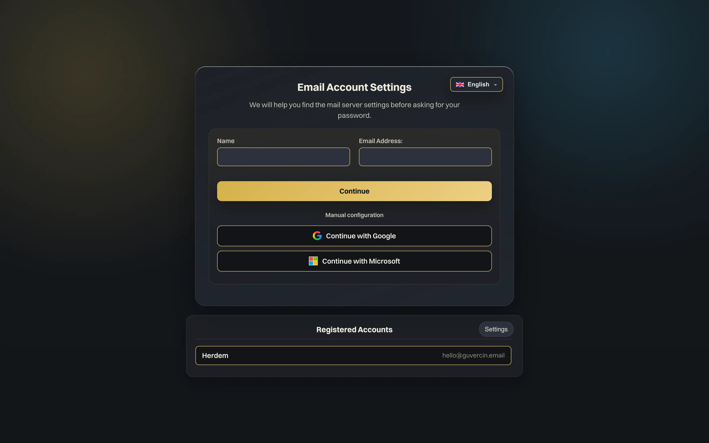

download guvercin
free and open source. no account, no tracking, no strings.
version 0.1.0 · released 29 July 2026 · about 28 MB · macOS 11 or later
not your system? see all downloads ↓
not ready to install? try guvercin online →
all downloads
every build comes from the same public repository, and every link below points at the GitHub releases page.
macOS
macOS 11 or later
a disk image you drag into Applications. one universal build — the same file runs on Apple Silicon and Intel, so there is nothing to choose.
format: .dmg
Windows
Windows 10 or 11
an NSIS installer that puts guvercin in your Start menu and registers it for mailto: links if you want it to.
format: .exe · Windows may show a SmartScreen warning because the installer is not code-signed yet — choose More info → Run anyway.
Linux
64-bit Linux
native packages for the two common families. you will need WebKitGTK 4.1 and libsecret, which most desktops already ship.
formats: .deb and .rpm
beta
beta channel
beta builds get new features first and may be unstable. they can also change how data is stored, so keep a backup of anything you care about. if something breaks, please tell us on GitHub — that is what beta is for.
system requirements
| platform | what you need |
|---|---|
| macOS | macOS 11 Big Sur or later; Apple Silicon or Intel. |
| Windows | Windows 10 or 11, 64-bit. |
| Linux | a modern 64-bit distribution with WebKitGTK 4.1 and libsecret available. |
| all platforms | roughly 200 MB free disk space plus room for your synced mail; 4 GB RAM; an internet connection for the first sync. |
installing
macOS
- open the .dmg
- drag guvercin into Applications
- the first time, right-click the app and choose Open, then confirm — the build is not notarized yet, so a normal double-click will be blocked.
Windows
- run the .exe installer
- if SmartScreen appears, choose More info → Run anyway
- launch guvercin from the Start menu.
Linux
- install with
sudo dpkg -i guvercin_0.1.0_amd64.deborsudo rpm -i guvercin-0.1.0.x86_64.rpm - if dependencies are missing, run
sudo apt -f install - launch guvercin from your application menu.


add your account in three steps
- choose “continue with Google” or enter your email address
- confirm in your browser, or fill in your IMAP and SMTP details — guvercin will try to detect them for you
- wait for the first sync, then your mail is available offline too.
you can add as many accounts as you like, and each one keeps its own local database.
build it yourself
the source is public, and the app you download is the app you can compile.
git clone https://github.com/guvercin-email/guvercin-desktop.git
cd guvercin-desktop
npm install
npm run app:buildyou will need Rust and the Tauri prerequisites for your platform — the repository README lists them.
having trouble? write to support@guvercin.email — we read everything.